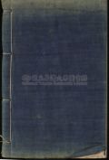

Languages
台文
｜
中文
｜
日本語
｜
English
字體
小
｜
中
｜
大
首頁
/
白話字數位典藏
白話字數位典藏全文檢索
查詢模式
選擇年代
清國時代(1885-1895)
日本時代(1895-1945)
戰後(1945-1969)
1885-1895
1896-1905
1906-1915
1916-1925
1926-1935
1936-1945
1946-1955
1956-1965
1966-1969
1970-1980
1980-1990
1990-2000
2000-2010
2010-
選擇文類
詩
散文
小說
戲劇
傳記
選擇作者
陳清忠
陳清義
編輯部
柯設偕
吳天命
明有德
偕叡廉
周天來
劉華義
王守勇
林茂生
陳添旺
柯維思
王占魁
賴仁聲
陳瓊琚
雪峰逸嵐
吳清鎰
郭水龍
蕭樂善
許水露
葉金木
陳金然
章王由
廖得
鄭連坤
潘道榮
楊士養
梁秀德
劉約翰
周淑慧
高金聲
林燕臣
黃六點
蔡愛義
許有才
主筆
巴克禮
郭朝成
陳鳩水
張基全
陳明清
陳能通
拾穗生
顏振聲
卓恆利
傳道局
胡文池
劉主安
鄭兒玉
潘有三
葉漢章
Google Search
Yahoo Search
全部
刊名
標題
標題(教羅)
全文
全文(教羅)
作者
第1頁，共7頁(共124筆資料) 0.62724304199219sec
1
2
3
4
5
...
7
To Page
GO
文字列表
圖文列表
排序
日期
文類
刊名
作者
影像
[1892-2 台南府教會報 文類-詩 作者--/-]
永新 [ Eńg sin ]
永新1892年 2月第 82卷 p.151.有一層事實在好聽，我心歡喜來報；人人若信，就攏無驚，真正是通呵咾。 (每節紲吟下面四choā。) 是舊，猶過永新，是舊，猶過永新；我知，我知是真，是舊，猶過永新。2.上帝ê 囝耶穌基督，替我chi̍t人來死；予我通入佇伊聖國，永遠佮伊徛起。3.耶穌替我擔當災難，來死佇十字架；予我常常歡喜平安，用血贖我ê債。4.耶穌仁愛無窮無盡，實在袂ē測度；求主耶穌感我ê心，予我歡喜順服。 ...
[1885-8 臺灣府城教會報 文類-詩 作者--/-]
O-ló上帝 [ O-ló Siōng-tè ]
O-ló上帝 1885.08 第二張 p.8O-ló天頂主宰，創造天、地、kap海，保護萬民：人人無論大細，同聲o-ló上帝； O-ló三位一體，父、子、聖神。詩調(略)...
[1885-9 臺灣府城教會報 文類-詩 作者--/-]
耶穌屬我 [ Iâ-so͘ sio̍k Goá ]
耶穌屬我 1885.09 第3張 p.12 (這首詩本是施牧師翻譯--的，寫唐人字，分予人看。今阮用白話字印佇這--裡。章中「耶穌屬我」彼句的解說就是講「耶穌屬佇我的，」毋是講「耶穌贖我的罪。」) 今我有得朋友， 耶穌屬我， 伊所疼我不休， 耶穌屬我。 世間快樂緊退， 朋友交陪快疏， 我獨安心無改， 耶穌屬我。 雖然到老閣散， 耶穌屬我， 我信靠伊幫贊， 耶穌屬我。 我欠缺主保足， 伊寶血罪替贖， Chhoā向望到結局， 耶穌屬我。 雖然舊性原在， 耶穌屬我， 對敵計謀陷害， 耶穌屬我。 倚靠救主成聖， 清義、智識造成， 較...
[1885-10 臺灣府城教會報 文類-詩 作者--/-]
請近救主 [ Chhiáⁿ kīn Kiù-chú ]
請近救主1885.10 第四張 p.21(舊年佇廈門有koh出1本冊，號做聖詩歌，是用44首新的詩來抾做1本。Chiong中阮有揀1首來印佇遮。) 我聽耶穌的聲講明，恁攏踮這世間，見若勞苦來我面前，逐人攏有平安。我聽伊講盡在歡喜，隨時就去揣伊，得著常常平安無死，永踮耶穌身邊。我聽耶穌好聲的音，真清活泉示我，人若喙焦欲送伊啉，應該緊緊近倚。我聽伊講受著勉勵，歡喜趁伊就啉，不止爽快精神加倍，永無艱苦的心。我聽耶穌的聲也講，我是世間的光，信我的人會得清爽，那徛光光中央。我聽伊講攑頭觀看，榮光真正得意，耶穌真光永永無散，照我行到一世。 ...
[1886-6 臺灣府城教會報 文類-詩 作者--/-]
謙卑 [ Khiam-pi ]
謙卑 1886.06 第十一張 p.79 （這首ê詩本是翻譯汕頭ê腔，印tī in ê公會雜錄；後--來阮翻譯台灣ê腔，來印tī chia 。） 1.看嬰兒tī 馬槽內， 伊腳下牧者敬拜： 是我主！聖經所記載， 是我主！榮光ê主宰。 用謙卑，用心拜跪， 認我主至尊至貴。 2.看這人tī 拿撒勒， 順父母，真有孝德： （每節著續吟下面4 choā。） 是我主！聖經所記載， 是我主！榮光ê主宰。 用謙卑，用心拜跪，認我主至尊至貴。 3.看這人滿心煩惱， Tī 曠野禁食枵餓： （Koh吟hit 4 choā 。） 4.拉撒路墓前來聽， 是這人哀哭ê聲： （Koh吟hit 4 ch...
[1886-9 臺灣府城教會報 文類-詩 作者--/-]
明宮好地 [ Bêng-kiong Hó-tē ]
明宮好地1886.09 第十五張 p.1111.我心思想tī 天頂好地， 天使聚集tiàm hia; 朋友濟濟先到快活， 無勞無苦無驚。（每節著續吟下面4 choā ） 攏無koh相離， 攏無koh相離， 攏無koh相離， Tī hia 永bē 相離。2.我心思想tī 天頂好地，基督做王坐位； 贏歹ê人齊聲o-ló, 無了時做1堆。（Koh吟hit 4 choā ） 3.我心思想tī 天頂好地， 聖徒永做鄰右； 白衫冕旒攏bē敗壞， 快樂相tâng享受。（Koh吟hit 4 choā ） 4.我心思想tī 天頂好地， 親戚瞭望致心； 彈琴吟詩咱攏有份， 所行ê路鋪金。（Koh吟hit 4 ch...
[1886-9 臺灣府城教會報 文類-詩 作者--/-]
新名（看默示錄 2：17） [ Sin miâⁿ (Khoàⁿ Be̍k-sī-lio̍k ii:17.) ]
新名（看默示錄 2：17）1886.09 第十四張 p.103新名咱beh得著新名tī hit 地， Tī hit 地，hit 光光明明地， 永kap聖ê天使bē lán-sē ，Tī hit 光明地。Hit 新名：hit 新名 咱beh 得著hia， Hit 新名：hit 新名 是咱主所寫。 咱beh 得著新名tī hit 地， Tī hit 地，hit 清清爽爽地， 永kap聖ê天使bē lán-sē，Tī hit 光明地。 名是耶穌記tī 白石面， 若無家己受就bat bē 真，主所hō͘ ê人，伊允會認， 因為咱較贏。 Hit 塊石：hit 塊石 咱beh得著hia； Hit 塊石：h...
[1894-2 台南府城教會報 文類-詩 作者--/-]
補養心神詩 [ Pó͘ ióng-sim-sîn-si ]
補養心神詩 1894.02 106 koàn p.10 「養心神詩」1本是做咱教會ê大路用，從中ê詩濟濟真好thang 教示人，hō͘ 人較快bat 道理。總--是有1項thang 嫌，就是傷少，詩只有59首nā-tiāⁿ，bē-tit thang 齊備做教會逐項ê路用。扑算天下無1個教會親像咱ê hiah 大詩冊到hiah欠缺。也chiah-kú攏無加添新ê,差不多20年久猶原是hit 本。Hit 時ê中間雜錄參會報卻有新出幾若首；總--是揀選--起-來只有10外首會堪tit用。Chiah-ê 詩也攏是阮外國人做--ê。兄弟無做，káⁿ無的確是因為in bē會，kiám-chhái是tuì...
[1894-10 台南府城教會報 文類-詩 作者-潘有三/Phoaⁿ Iú-sam]
真理福音 [ Chin-lí Hok-im ]
真理福音 1894.10 第115卷 p.106 (是大社潘有三做--的。) 1.真真道理救靈魂， 通知有罪免沈淪； 可惜世人毋捌理， 拍算食穿做可以。 2.毋知日後天堂事， 無想天堂無掛慮， 雖有修心的法度， 所行所做亦差路。 3.只有耶穌是真神， 落來降世救萬民， 命令學生逐位傳， 救靈贖罪伊有權。 4.聖經所講是明明， 教人對信就得成； 咱今緊緊來就近， 天堂福氣才有分。...
[1891-9 臺灣府城教會報 文類-詩 作者--/-]
教會的兄弟所做的詩佮歌 [ Kàu-hoē ê hiaⁿ-tī só͘ Chò ê si kap koa. ]
教會的兄弟所做的詩佮歌 1891.09 第76張 p.62-63 屬主的人常常著歡喜；若無，算是袂曉上帝的大恩，日日賞賜咱，閣應允咱得著久長的快樂佇天--裡。這號心按怎樣會顯--出-來？保羅寄批予以弗所的聖徒講：「著用詩用歌、用神的賦，嘴吟心和來呵咾主。」 今論咱平素teh吟的詩佮歌，可惜是真少，因為較常teh用不過是（養心神詩），彼本若定。雖然人陸續做幾首印佇新聞雜錄、佇教會報，佮聖會報，毋過到今攏無通行。 佳哉廈門的Khip--先-生對詩篇摘出閣teh做，愛補教會的大欠缺。向望到年尾彼本會做成。有時本地人將in家己所做--的寄來予阮，無的確是論起聖經的道理抑是予咱佇拜堂通用。親...
[1893-2 台南府城教會報 文類-詩 作者--/-]
新年的詩 [ Sin-nî ê Si ]
新年的詩 1983.02 第94卷 p.11 （簡譜略） 「上帝，阮的上帝，日月久長，的確照顧阮，到死無煞」詩篇48：14。 1.主有恩典大慈悲， 予阮安然過1年。 阮今感謝用誠心， 請主耶穌聽阮吟。 2.罪過濟濟交代你， 是你tiâu來替阮死。 過身代誌放1爿， 向望榮光直進前。 3.未來代誌真烏暗， 願主chhoā阮到路站； 拄著對敵凶惡來， 主你贊阮佮伊刣。 4.有時軟弱佮憂悶， 求主堅固阮神魂； 行到曠野大沙埔， 認主永活真的路。 5.死失的路通驚惶， 今年是誰著先行？ 天父願你大降臨， 臨終安慰伊的心。 6.予阮清心佮信實， 予阮...

[1892-1 台大楊雲萍文庫白話字史料(編修) 文類-散文 作者--/-]
(96)
論聖神的工夫 [ Lūn Sèng-sîn ê Kang-hu ]
...
[1891-5 臺灣府城教會報 文類-散文 作者--/-]
代先升天無失落 [ Tāi-seng seng Thian bô sit-lo̍h ]
代先升天無失落1891.05 第73張 p.34 西國有一個讀冊人，生兩個囝，一查甫，一查某。查某大查甫--ê兩歲；大姊小弟十分ê相疼，父母看見歡喜，無拍算查某囝七歲就死。彼時查甫--ê只有五歲，查某--ê既然死，父母不止傷心；彼个查甫--ê無看見伊-ê大姊亦是一樣ê憂悶。後來照規矩埋葬出山；有一日讀冊人chhoā彼个查甫囝去山裡栽花種樹；到墓裡彼个小弟無看見伊-ê大姊，四界teh揣，老父就kā伊講，「囝 ah，beh見你ê姊妹，見袂著lah」。查甫囡仔聽見這話出聲大哭，想伊ê姊妹已經失落。伊ê父就kā伊安慰講：「你ê姊妹毋是失落，是beh閣活，ē閣相見，現在不過代先上去天堂nā-tiāⁿ」...
[1891-7 臺灣府城教會報 文類-散文 作者--/-]
玉皇，天后，城隍ê來歷 [ Gio̍k-hông,Thian-hō͘,Sêng-hông ê lâi-le̍k ]
玉皇，天后，城隍ê來歷1891. 7 第七十五張 p.51-52 查考宋朝ê史記，玉皇出世佇漢朝尾，姓張名儀，就是真定府行唐縣ê人；伊對細漢學習老君 ê教，隱居佇武當山採藥煉丹醫治病人。到宋朝徽宗ê時，有司公林靈素亦學習老君 ê教；伊用白賊話騙聖上。徽宗受伊ê 迷惑，就策封張儀做玉皇上帝，向望伊保佑國運久長；若是對策封張儀ê了後，無偌久徽宗父子，大某，細姨攏予金國 ê人掠--去，受凌辱極慘，死佇五國城。Hāiⁿ ah！對古早虔心敬玉皇ê人，毋值著徽宗ê實心:若是伊喪失國，紲失落身軀。玉皇怎樣無救伊ah！今敬玉皇ê人著掠這來做鑑戒。天后就是興化府莆田縣 ê人，林--氏ê 查某囝；家世sòng-...
[1891-8 臺灣府城教會報 文類-散文 作者--/-]
嫁娶著好規矩 [ Kè chhoā tio̍h hó kui-kí ]
嫁娶著好規矩1891.8 第七十六張 p.58 凡若做耶穌ê學生著較各樣眾人，著趁真實，毋通趁世俗，因為咱佮世俗人無相同。世俗有相爭相冤，毋是怨恨人，其實是怨恨咱無趁世俗，無合in ê心nā-tiāⁿ。耶穌講「恁應我無屬佇世間，所以世間人怨恨恁。」按呢做耶穌 ê學生徛起這世間無予歹風俗拍亂，無予私欲迷--去，這chiah是合道理；看I約翰5:5，有講："Chī-chuī-á ē 較贏世俗？獨獨信耶穌做上帝ê囝 ê人ē。」親像娶某鬧新娘房，本是無合道理ê事，所以屬主ê人猶過袂曉脫離這號歹樣，是毋對。男女配合是人ê大人倫，賀喜ê人毋是親戚就是朋友，攏歡喜in teh嫁娶，相親相疼。當hit時人客...
[1891-8 臺灣府城教會報 文類-散文 作者--/-]
老母替囝死 [ Lāu-bó thè kiáⁿ sí ]
老母替囝死1891.8 第七十六張 p.58 舊金山佇美國ê西爿，出金第一濟。美國東爿ê百姓起頭聽著金山出金ê消息，一時人心pho̍k-pho̍k-chhéng，逐人攏想愛到西爿去發財。內中有一人放拺伊ê某囝佇厝裡，單身去金山掘金。Beh起身佮伊ê某囝約，若掘著金發財，就beh寫批請in某囝去。無料去真久攏無音信，伊ê某佇家內萬分ê著急；因為無通知伊ê丈夫死á活。後來接著伊丈夫ê批，講：伊已經發財lah，請伊ê某囝趕緊搭船去。伊ê某接著批歡喜到極，趕緊chhoā伊ê細囝到紐約買船票搭貨船beh去金山佮伊ê丈夫相會。Hit隻船駛到大海中，忽然船中發火，通船ê人驚到跤浮手sih，知船內有濟濟火藥...
[1891-9 臺灣府城教會報 文類-散文 作者--/-]
論上帝註定ê時 [ Lūn Siōng-tè chù-tiāⁿ ê sî. ]
論上帝註定ê時(翻譯英國新聞報。)1891.9 第 77張 p.67~70 約翰2:4 記主耶穌ê話講：「我ê時猶未到」。擱記兩koè，講：「因為伊ê時猶未到，所以無人掠伊。(約翰7:30 ； 8:20)」。到後來擱記，「耶穌知伊ê時到」(約翰 13:1)；擱siāng hit ê昏耶穌也祈禱，講：「父ah，時到lah」(約翰17:1)。今chit-ê時是甚麼？就是上帝註定ê時，予一世人ê遭遇，不論歡喜憂悶，拖磨苦痛攏是配到拄拄好。Ē得顯明上帝ê榮光，這正是基督終身要緊ê事業。第一重 ê時候就是佇髑髏予人釘死hit-tia̍p，所以teh講起「伊ê時猶未到」，較常是指佇 chit-ê 代誌。...
[1891-11 臺灣府城教會報 文類-散文 作者--/-]
買魚毋免錢 [ Bē-hî m̄-bián chîⁿ ]
買魚毋免錢1891.10 第 78章 p.75~76 佇阮祖家有一个牧師teh傳道理真正熱心；常常家己煩惱。伊所講ê道理親像無盡力，chiah 予人無beh信伊。有一日去佇拜堂，猶原是這个款式。伊所講ê話人kā掠做無要緊；所以對禮拜堂倒--來不止鬱卒，家己 teh想世間各項事亦攏是按呢。湊巧佇街路頭拄著一个賣魚--ê。就問伊講，近來有生理 á無？伊講，無，今仔日攏無人買。牧師擱問伊講，這擔魚beh 賣偌濟錢？賣魚--ê kā伊講幾圓。牧師就攏 kā伊買，續講，Chiah-ê魚我家己攏無要用，我毋tihN8，你著擔去大路，大聲kā人講，有兩尾魚beh 予人，恁若愛，就來提。賣魚--ê講，按呢，...
[1892-1 台南府教會報 文類-散文 作者--/-]
論教會報 [ Lūn Kàu-hoē-pò ]
論教會報1892.1 第 81 卷 p.3 凡關心teh做生理 ê人，的確愛知各港口出入ê貨件，各埠頭當銷ê物，以及起落ê行情，想安怎樣通從中取利；何況關心佇教會ê兄弟姊妹kiám無愛看會報知各教會ê情境，看有甚乜通利益本身勉勵別人。人ê身軀跤手喙目百體各有路用，所以ē活動鬥搭，是倚靠腦髓通報各部位，予伊知通振動出力；教會報也通借比是教會ê腦髓，kiám毋著對重？今將彼个路用排列tī下面:－1. 教會報會結聯各位遠近ê教會親像一家。教會ná設ná開闊，聖徒愈久愈加添。聖徒ê境遇不同，所結ê果子也各樣。人不論踮佇佗位，所看所聽逐項事，不過是近附四位ê消息nā-tiāⁿ；愛知較遠教會ê情形，著對...
[1885-7 臺灣府城教會報 文類-散文 作者-葉漢章/Ia̍p Hàn-chiong]
論白話字ê利益 [ Lūn Pe̍h-oē-jī ê Lī-ek ]
論白話字ê利益是葉漢章先生做--ê 1885.06 Tē 1 張 p.2-3 論做白話字ê要緊 今起頭做這個白話字ê，伊ê 意思是怎樣ah？就是beh hō͘ 人會bat，所以指用二十三個字母tiāⁿ-tiāⁿ，就是a，b，ch，chh，e，g，h，i，j，k，kh，l，m，n，ng，o，o͘，p，ph，s，t，th，u；che是beh hō͘ 人會認。Koh tī二十三個字母ê中間有分別唇音、齒音、舌音、喉音、鼻音ê各樣；親像b，p，ph，u，是唇音；ch，chh，g，k，kh，s是齒音；h，i，j，l，t，th是舌音；o，o͘，e是喉音；m，n，ng是鼻音；che是beh hō͘ 人讀...
第1頁，共7頁(共124筆資料)
1
2
3
4
5
...
7
To Page
GO
數位典藏國家型科技計劃
拓展台灣數位典藏計畫
版權所有 國立台灣師範大學 台灣文化及語言文學研究所©2008
10610 台北市和平東路一段162號│TEL 02-7734-5516│Fax 02-2358-2461
計劃簡介
典藏特色
執行架構
計畫典藏數位化流程
成員介紹
台灣白話字發展簡介
巴克禮牧師與《台灣教會公報》
廈門話字典-杜嘉德
白話字教學-打馬字
中國南方白話字發展
台灣基督教長老教會簡表
台灣基督教長老教會教會歷史委員會
《北部台灣基督長老教會教會ê歷史》
關於陳清忠
白話字文學：台灣文學的早春